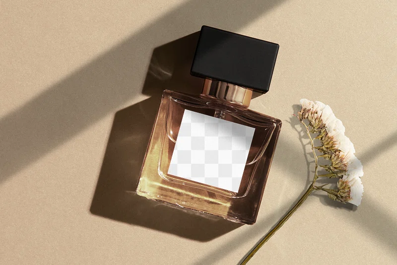

Perfume has been an integral part of human culture for centuries, symbolizing luxury, individuality, and emotion. Derived from natural ingredients like flowers, spices, and woods, perfumes are crafted into unique scents that evoke memories and emotions. The process of creating perfume involves blending top, middle, and base notes to create a harmonious fragrance that evolves over time. Whether you're drawn to floral, woody, or citrusy scents, there's a perfume for every personality and occasion.